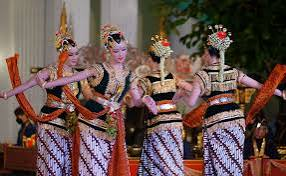

Festival Budaya Desa
Pada tanggal 20 Januari 2025, Desa Maju Sejahtera akan mengadakan Festival Budaya tahunan yang menampilkan berbagai kesenian dan kuliner khas desa.
Desa Maju Sejahtera adalah desa yang penuh dengan potensi dan keindahan alam. Kami mengundang Anda untuk mengenal lebih dekat desa kami yang kaya akan budaya dan tradisi.
Desa Maju Sejahtera terletak di kawasan pegunungan yang asri dengan suasana sejuk dan nyaman. Desa ini memiliki sejarah panjang serta komunitas yang ramah dan gotong royong.

Desa Maju Sejahtera memiliki berbagai potensi unggulan di bidang pertanian, pariwisata, dan kerajinan tangan.
Pada tanggal 20 Januari 2025, Desa Maju Sejahtera akan mengadakan Festival Budaya tahunan yang menampilkan berbagai kesenian dan kuliner khas desa.
Pemerintah desa bersama kelompok tani mengadakan pelatihan pertanian organik untuk meningkatkan hasil panen sekaligus menjaga kelestarian lingkungan.
Jika Anda memiliki pertanyaan atau ingin berkunjung ke desa kami, silakan hubungi kami melalui: